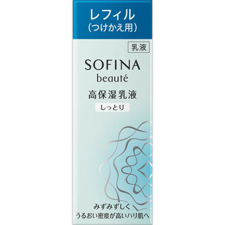

返回列表
产品名称：ソフィーナボーテ 高保湿乳液 しっとり つけかえ用

花王 ソフィーナボーテ 高保湿乳液 しっとり つけかえ用 ６０Ｇ
メーカー 花王
JANコード 4901301325143
商品の特徴
夜のみ使用で約３ヶ月分
- 成分・分量
- 水、グリセリン、ジメチコン、BG、PEG-32、セチルPGヒドロキシエチルパルミタミド、ジカプリン酸ネオペンチルグリコール、ベヘン酸グリセリル、オリーブ果実油、アスナロ枝エキス、チューベロース多糖体、ショウガ根エキス、ユーカリ葉エキス、アルギニン、ステアロイルグルタミン酸、ジイソステアリン酸ポリグリセリル-2、水添ポリデセン、（ジメチコン／ビニルジメチコン）クロスポリマー、（アクリレーツ／アクリル酸アルキル（C10-30））クロスポリマー、水酸化K、セタノール、エタノール、メチルパラベン、香料
- 用法及び用量
- ＜使用方法＞
適量（ポンプ３押し分）を顔全体になじませます。